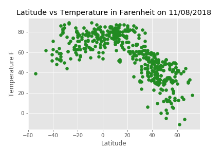
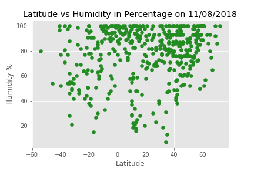
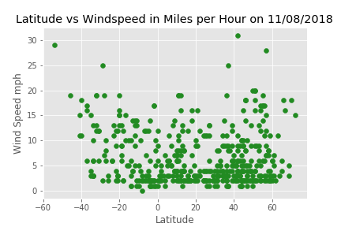
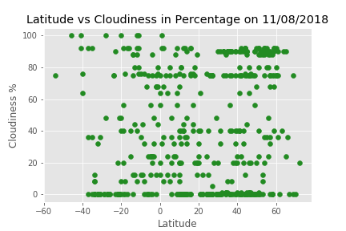

Latitude and Temperature

On the temperature front (no pun intended), there appears to be a strong correlation between high temperatures and low latitudes. This is apparent from the strong clustering roughly centered about a downward parabola. This shouldn't be a huge surprise since we generally expect higher temperatures near the equator." style="width:100%;max-width:300px">
×

Latitude and Humidity

On the humidity side of things there appears to be less to say. The only slight anomaly that we could possibly investigate further would be the lack of low humidities near 0 degrees. It might be worth going back and running this algorithm again many times at many points throughout the year to see if the 0 degree phenomenon is a mere coincidence or of particular interest." style="width:100%;max-width:300px">
×

Latitude and Windspeed

Windspeed versus latitude appears deceptive. Attempting to detect correlation based on the visual alone would probably be about as biased as the results of a Rorschach test." style="width:100%;max-width:300px">
×

Latitude and Cloudiness

There is nothing to say about cloudiness versus latitude from the graph. All we can really say about the correlation here is that there is a very strong chance there is none." style="width:100%;max-width:300px">
×